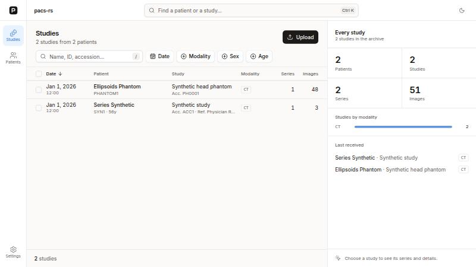
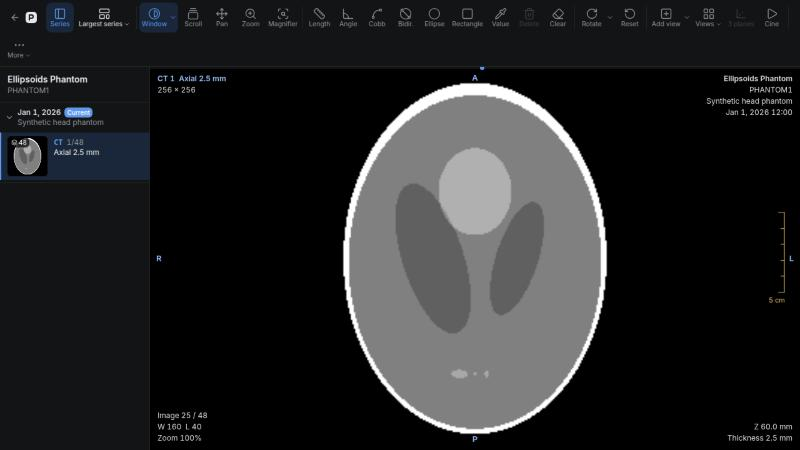

The archive
Keep every study.
Files on disk or in S3, an index in SQLite or Postgres. Studies arrive from scanners over DICOM, from scripts over HTTP, or by dropping files on the page.
- A login with roles, and tools with tokens of their own
- Rights per project: a reader sees their project and nothing else
- De-identification on the way in, by the DICOM profile
- An audit trail of who stored, read, searched and deleted what

The viewer
Read any of them.
A viewer in the browser, on the same server. Nothing to install on the reading side, and the same studies are there for any DICOMweb viewer.
- Window, scroll, zoom, cine, and the planes of a volume
- Lengths, angles and regions, kept with the study
- Lossless storage: every pixel comes back as it was sent
- Priors of the same patient beside the current study

One server, for research and for the clinic
Most hospitals run two archives: the clinical one, and a second one where researchers get de-identified copies. pacs-rs is written to be both, in one program, with the line between them drawn by projects and rights rather than by a second installation.
Try it in five minutes
Docker, one file, and a sample study with no patient behind it.
curl -fsSLO https://raw.githubusercontent.com/Aegyptiacus11/pacs-rs/main/compose.yaml
docker compose up -d --waitThen open http://127.0.0.1:8080/ui/, or follow the quickstart, which sends a first study and asks for it back over HTTP.
What it speaks
DICOMweb
Search, retrieve and store over HTTP (QIDO-RS, WADO-RS, STOW-RS), with matching as the standard defines it and transcoding on request.
DICOMwebDICOM network
Receives from scanners and workstations, and searches and pulls from another archive. Over TLS when given a certificate.
DIMSEA REST API
For scripts and pipelines, described in the code itself: the reference is written from it, and a server hands out the same description.
The API, task by taskHow it is made
Rules come from the standards
Each behaviour names the section of DICOM or the IHE profile it follows, and is tested against other implementations.
DICOM, on a real studyThe documentation is run
The commands on its pages are sent to a real server each time the pages change. An example that stops being true cannot be published.
HowIt says what is missing
Early development. The roadmap lists what is not built, in the order it is meant to be, each with the test that will say it is done.
Roadmap